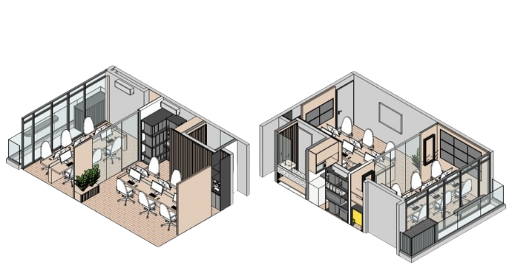
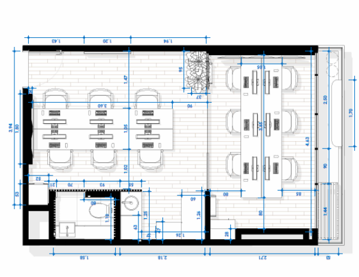
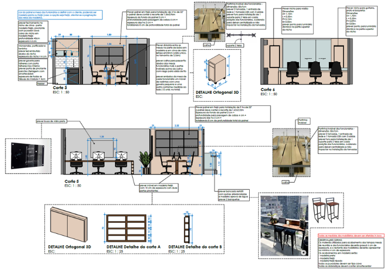
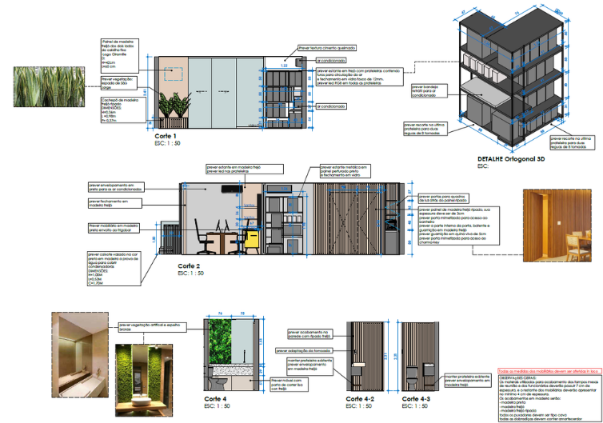

Reforma do escritório sede
Sede Giramille
São PauloSP
Levantamento cadastral
Estudo preliminar
Executivo
Revit
Reforma do escritório sede.
Perspectivas isométricas

Do layout ao detalhamento
Sede GiramilleLayout

Detalhamento executivo

